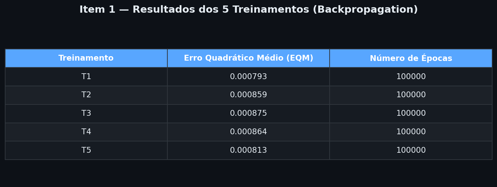
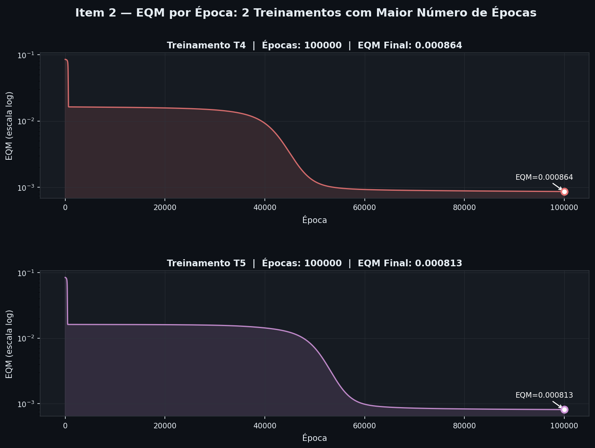
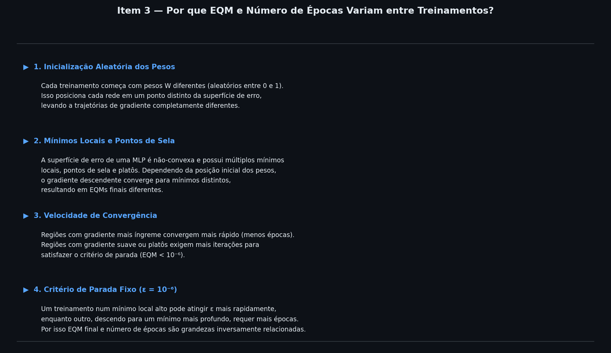
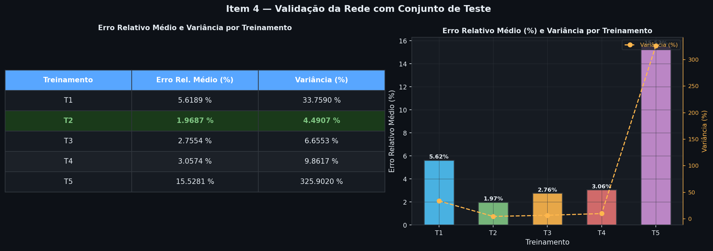
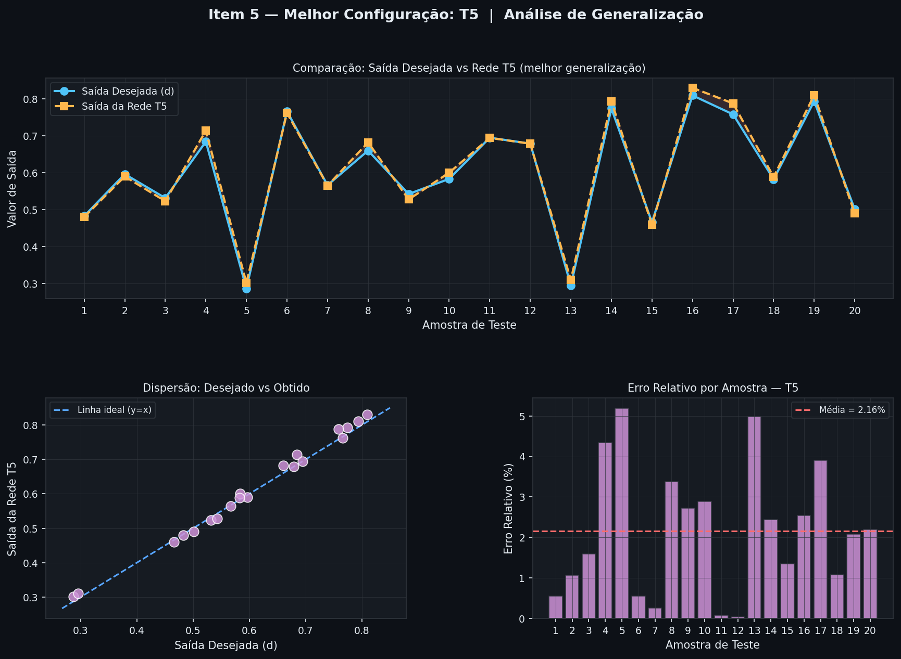

Abaixo a tabela mostrando o Erro Quadrático Médio final e o número de épocas para os 5 treinamentos realizados com inicializações aleatórias de pesos.

Os gráficos de redução do erro quadrático médio ao longo das épocas (escala logarítmica) para os treinamentos que exigiram maior número de épocas.

As explicações gráficas das análises (ver imagem) demonstram a variação dos fatores. Resumo explicativo abaixo:

Abaixo estão os resultados do teste no conjunto de validação, apresentando o Erro Relativo Médio e Variância de cada modelo treinado em dados não vistos.

No gráfico abaixo observa-se a comparação entre a saída desejada e a saída da melhor configuração obtida na validação.

Configuração Selecionada: T2
Justificativa: O treinamento T2 apresentou o menor erro relativo médio (em torno de 1,97%) no conjunto de testes. Isso indica uma melhor generalização dos pesos não vistos. A variância baixa atesta a consistência das predições, o que é fundamental para evitar picos de erros ao lidar com predições de absorção de energia no sistema de ressonância magnética.